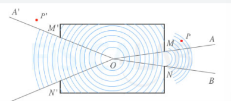

Entrada Blog
Introducción
Los principios de superposición e interferencia son fundamentales en el estudio de las ondas. La superposición se refiere a la combinación de dos o más ondas para formar una onda resultante, mientras que la interferencia se refiere a la interacción entre dos o más ondas que se encuentran en el mismo punto del espacio.
Principios de superposición
Definición
El principio de superposición se puede definir como “el efecto de la suma de acciones es la suma de casa efecto de cada acción”.
Explicación
El principio de superposición nos permite decir que es lo que le pasa de forma general al objeto inicial, es lo mismo que lo que resulta de sumar lo que le pasa a esa mismo objeto sometido a cada una de las acciones por separado.
¿Cuándo se puede usar?
El principio de superposición se cumple y se puede aplicar siempre y cuando el comportamiento de los materiales sea LINEAL.
Interferencia constructiva
la interferencia constructiva es el resultado de la superposición de ondas en fase, lo que lleva a una amplificación de la amplitud en el punto donde se encuentran. Este fenómeno es fundamental en la comprensión de diversos fenómenos ondulatorios, como la formación de patrones de interferencia en experimentos con rendijas dobles.
Interferencia destructiva
La interferencia destructiva se produce cuando dos o más ondas se superponen y la amplitud en un punto de la onda resultante sea menor que el de las ondas originales. Esto se da cuando hay un desfase entre las ondas.

Interferencia de ondas sonoras
Se denomina interferencia al resultado de la superposición de dos o más ondas armónicas. Este fenómeno es un caso particular de interferencia.
FACTORES QUE INFLUYEN EN LA INTERFERENCIA
Frecuencia: la frecuencia de las ondas sonoras es un factor crucial en la interferencia. Ondas con frecuencias próximas son más propensas a interferir entre sí.
Diferencia de fase: La diferencia de fase entre las ondas determina el tipo de interferencia que ocurre. Si las ondas están en fase, la interferencia es constructiva. Si están fuera de fase, la interferencia es destructiva.
Amplitud: la amplitud de las ondas también influye en la interferencia. Ondas con amplitudes mayores tienden a tener un efecto más significativo en la interferencia.
Difracción de ondas
La difracción es el fenómeno por el cual una onda que atraviesa un obstáculo por un orificio pequeño se distorsiona y se propaga en todas direcciones detrás de dicho orificio.
